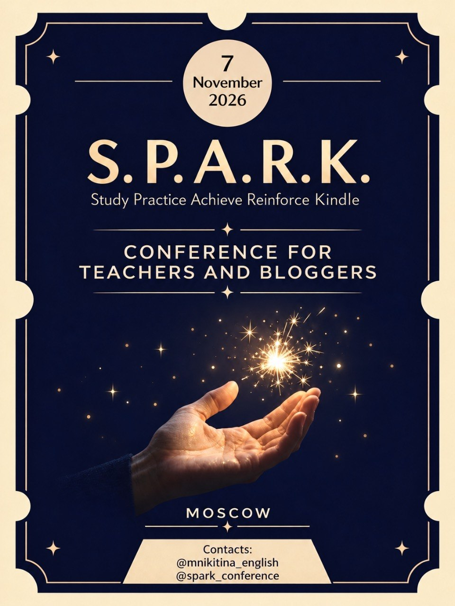

Преподавание и методика
Как строить сильные уроки, работать с лексикой и аутентичными материалами, организовывать повторение и готовить учеников к экзаменам без ощущения бесконечной гонки.
Один день для идей, которые хочется забрать с собой
S.P.A.R.K.
Study · Practise · Achieve · Reinforce · Kindle
О преподавании, материалах, AI, экзаменах и собственных образовательных проектах — в одном офлайн-дне.
Приобрести билет↗
01 · О конференции
7 ноября в Москве соберутся преподаватели, методисты и эксперты, чтобы обсудить темы, которые напрямую связаны с работой в образовании: уроки, материалы, экзамены, AI, профессиональное развитие и собственные проекты.
В программе — выступления практиков с разным опытом и профессиональным фокусом. Можно будет услышать разные подходы, сравнить их со своей практикой и найти решения для собственных задач.
02 · О чём будем говорить
Как строить сильные уроки, работать с лексикой и аутентичными материалами, организовывать повторение и готовить учеников к экзаменам без ощущения бесконечной гонки.
Как использовать современные инструменты так, чтобы они экономили время преподавателя, а не заменяли методику. И как создавать материалы, которые действительно работают на уроке.
Как развивать экспертность за пределами уроков: запускать продукты, продвигать себя и свои идеи, выстраивать процессы и не забывать о юридической стороне работы.
03 · Зачем приходить
В течение дня можно будет познакомиться с опытом коллег, услышать разные профессиональные позиции и собрать идеи для уроков, материалов и собственных проектов.
Приобрести билетУвидеть, как другие преподаватели решают знакомые задачи.
Найти идеи, которые можно адаптировать под свои уроки и проекты.
Вернуться к работе с новыми идеями и материалом для размышлений.
04 · Спикеры
Выберите карточку, чтобы познакомиться с экспертом и его профессиональным опытом.
01 · Спикер
Преподаватель английского языка с 25-летним опытом, методист, тренер преподавателей, основатель онлайн-школы и методического центра, автор книги «Легко учить(ся)».
Более 5000 преподавателей прошли авторские курсы Татьяны и применяют полученные знания в своей работе. Её экспертиза — создание эффективной образовательной среды онлайн и офлайн, развитие преподавателей и построение методических решений.
05 · Программа
09:30–09:50 Регистрация
09:50–10:00 Открытие конференции, приветственное слово
10:00–10:30 Мария Никитина
10:30–11:00 Татьяна Суслова
11:00–11:30 Татьяна Фанштейн
11:30–11:35 Партнёры
11:35–12:00 Кофе-брейк
12:00–12:30 Владимир Скворцов
12:30–13:00 Елена Паремская
13:00–13:30 Татьяна Еремеева
13:30–15:00 Обед
15:00–15:40 Наташа Потапова
15:40–15:45 Партнёры
15:45–16:15 Арина Вдовина
16:15–17:00 Оксана Рябцева
17:00–17:30 Закрытие конференции, призы и подарки
06 · Место проведения
СПАРК · S.P.A.R.K. пройдёт в Басманном районе Москвы, рядом с метро «Бауманская».
Москва · м. Бауманская
7 НОЯБРЯ 2026 · МОСКВА